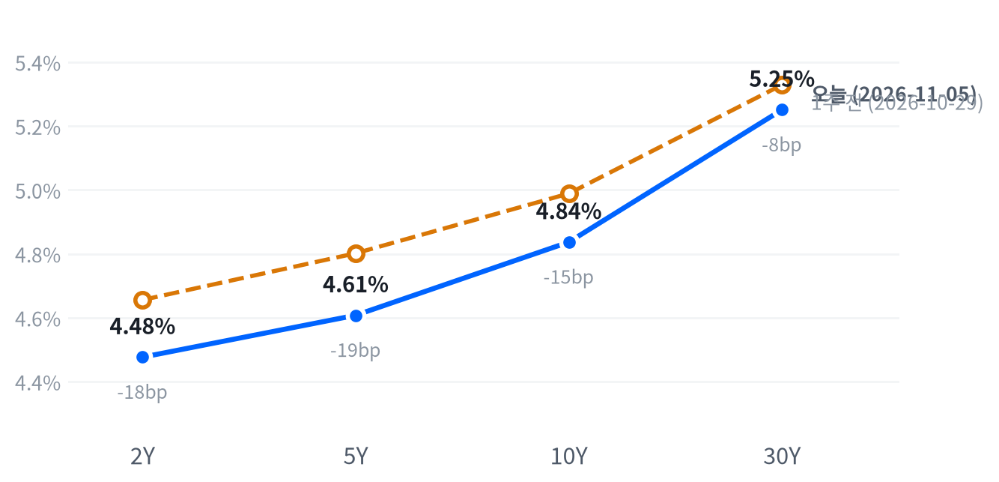

선거 다음 날의 반등이 하루 만에 뒤집혔다. 반도체 지수가 2020년 3월 이후 가장 크게 떨어졌다는 보도가 나왔고, 메모리·광통신·전력설비까지 함께 밀려 나스닥은 저점권에서 장을 마쳤다.
규제가 작동하기까지 시간이 남아 있어 이날 낙폭은 포지션 축소가 키웠다고 본다. 11월 6일 10월 고용보고서와 11월 12일까지 기술 업종의 상대 성과로 근거를 확인한다.
반도체와 AI 하드웨어가 하루를 지배했다. 퀄컴·Arm의 가이던스 실망과 민주당 의회의 데이터센터 규제 우려가 겹치면서 반도체 지수가 12% 안팎 떨어졌다는 보도가 나왔다. 기술 업종은 8.00% 내려 S&P보다 하루에 3.64%p 약했고, 메모리·광통신·전력설비 관련주도 함께 급락했다. 유틸리티·필수소비재·커뮤니케이션서비스는 1% 미만으로 덜 내렸다.
우리는 이날 낙폭의 상당 부분을 포지션 축소가 키웠다고 본다. 규제 위험은 작동 시점이 멀다. 새 의회는 1월에야 소집되고 법안에는 대통령 서명이 필요하며, 반도체 지수 30종목 가운데 28종목이 이미 고점 대비 약세장 구간에 있었다는 집계가 나왔다. 이미 흔들리던 업종에 재료가 겹쳐 매도가 쏠렸다는 설명이다. 옵션 내재변동성이나 포지셔닝 같은 가격 기반 기대는 구하지 못해, 시장 기대와 우리 해석의 차이는 아직 잴 수 없다. 가장 강한 반론은 재평가다. 퀄컴·Arm 가이던스와 선거 결과가 AI 설비투자의 지속성 기대를 실제로 낮췄고, 바킨 리치먼드 연은 총재는 하이퍼스케일러 채권 발행이 올해 5,000억 달러를 넘을 것으로 보고 신용 위험을 지켜봐야 한다고 말했다. 그렇다면 조달 부담이 커진 고객의 지출 계획이 다시 매겨지는 중이고, 기술 업종의 상대 약세는 하루로 끝나지 않는다. 2년물 금리가 크게 내렸지만 같은 날 바킨 총재는 추가 인상 예상을 유지해, 이 하락은 정책 경로보다 안전자산 수요에 가깝다고 본다.
3개월 시계로 보면 반도체·AI 하드웨어와 전력망 업종의 상대수익률이 크게 악화됐고, 필수소비재와 유틸리티 같은 방어 업종이 상대 강세를 얻었다. 가격 기준 시장 국면도 단기 약세 조건을 처음 채웠다. 반도체 낙폭이 되돌려질지는 판단을 보류하고, 새 아이디어는 내지 않는다. 두 설명은 다음 한 주의 기술 업종(XLK)과 S&P 상대 성과에서 다른 결과를 낸다. 그 비교가 가장 직접적인 표현 수단이지만 VIX가 고점권으로 뛴 구간이라 호가 차이와 체결 비용이 커질 수 있고, 비용 자료는 없다.
이 판단은 11월 5일 종가 대비 11월 12일 종가로 잰다. XLK 누적 등락률에서 S&P 누적 등락률을 뺀 값이 +3.38%p 이상이면 포지션 축소의 과잉 하락이라는 판단을 뒷받침하고, 같은 폭 이상 뒤처지면 판단은 약해지며 AI 설비 공급망의 재평가를 우선 설명으로 본다. 그 사이면 결론을 내지 않고, 같은 기간 2년물 누적 변화가 ±25bp를 넘어도 결론을 내지 않는다. 첫 근거는 11월 6일 08:30(ET) 10월 고용보고서와 그날 장 마감 뒤의 루멘텀 실적 반응에서 나온다.
| 지수 | 종가 | 등락 | 기준일 |
|---|---|---|---|
| 닛케이225 | 62,188.63 | -1.42% | 11월 4일 |
| 항셍 | 23,919.50 | +1.67% | 11월 4일 |
| 상해종합 | 3,686.17 | +2.16% | 11월 4일 |
| DAX | 26,437.67 | +2.22% | 11월 4일 |
| FTSE100 | 10,782.66 | -0.43% | 11월 5일 |
| 유로스톡스50 | 6,265.71 | +1.97% | 11월 4일 |
| VIX | 28.18 | +11.57p | 11월 5일 |
닛케이·항셍·상해종합·DAX·유로스톡스50은 들어온 마지막 종가인 11월 4일 값이고, FTSE100과 VIX는 11월 5일 값이다. VIX 등락은 포인트다.
미국은 아시아·유럽과 엇갈렸다. 아시아 세 지수는 평균 0.80% 올랐지만 지역 안에서도 갈려, 상해종합과 항셍은 오르고 닛케이는 내렸다. 유럽도 평균 1.25% 올랐고 지역 안에서 나뉘었다. 마지막 값이 11월 4일인 DAX와 유로스톡스50은 올랐고, 11월 5일 장을 마친 FTSE100만 내렸다. 영란은행은 이날 기준금리를 4.00%로 올렸다. 대륙 유럽과 아시아의 마지막 종가는 미국 반도체 급락 전의 값이다.
밤사이 선물은 나스닥 쪽이 먼저 밀렸다. 나스닥 선물(NQ)은 11월 4일 18:00(ET) 고점에서 내려와 00:30(ET)에 저점을 찍었고, 그 사이 범위는 1.78%였다. 전날 장 마감 뒤 퀄컴·Arm 실적이 나온 시간대다. S&P 선물(ES)은 같은 00:30 저점 뒤 07:00(ET)에 고점을 찍어 범위가 0.62%에 그쳤다. 현물은 S&P -0.13%, 나스닥 -0.72%, 러셀2000 -0.06%의 갭으로 거의 보합 출발했고, 하락은 정규장에서 쌓였다.
평균적인 종목은 지수보다 덜 내렸다. S&P 동일가중 지수가 시총가중 지수보다 1.52%p 앞서, 이날 하락은 소수가 끌어내림으로 요약된다. 세 지수 모두 저점권에서 끝났다.
저점권·고점권 경계는 최근 2,259거래일의 일간 종가 위치 이력으로 다시 잰 기준이다.
반도체·AI 하드웨어가 지수를 끌어내린 날이다. 11개 업종이 모두 내렸지만 낙폭은 기술 업종에 몰렸고, 방어 업종은 지수의 4분의 1도 안 되게 내렸다. 장 마감 뒤에는 루멘텀이 회계연도 1분기 매출 12.6억 달러와 다음 분기 매출 가이던스 15.75~16.25억 달러를 발표했다. 컨센서스 대비 평가와 시간외 주가 반응은 확인하지 못했다.
출처: NBC News, Benzinga, CNBC
| 지수 | 종가 | 등락률 |
|---|---|---|
| S&P500 가치주 | 236.48 | -2.80% |
| 다우존스 | 51,523.06 | -3.44% |
| S&P500 | 7,353.73 | -4.36% |
| 러셀2000 | 2,729.89 | -4.45% |
| 나스닥 | 24,315.00 | -5.52% |
| S&P500 성장주 | 128.42 | -5.75% |
| 섹터 | 등락률 |
|---|---|
| 커뮤니케이션서비스 | -0.59% |
| 유틸리티 | -0.71% |
| 필수소비재 | -0.75% |
| 부동산 | -1.82% |
| 헬스케어 | -2.50% |
| 금융 | -2.87% |
| 소재 | -2.91% |
| 에너지 | -2.98% |
| 경기소비재 | -3.83% |
| 산업재 | -4.12% |
| 기술 | -8.00% |
반도체 급락이 지수 전체를 끌어내렸다. S&P는 4.36% 내린 7,354, 나스닥은 5.52% 내린 24,315로 끝났다. 다우는 3.44% 내린 51,523, 러셀2000은 4.45% 내린 2,730이다. 세 지수 모두 평소 하루 움직임의 5배를 넘는 낙폭이다. 전날 다우가 3% 넘게 올랐던 선거 반등은 하루 만에 지워졌다.
하락을 만든 것은 AI 하드웨어에 쌓여 있던 수익성 의문에 두 재료가 한꺼번에 얹힌 일이다. 하나는 전날 장 마감 뒤 나온 퀄컴·Arm 실적으로, 퀄컴은 실적이 예상을 넘었지만 약한 가이던스에 9% 안팎 내렸다는 보도가 나왔다. 다른 하나는 선거 뒤 데이터센터 건설 감독이 강화될 수 있다는 우려다. 이 매도가 선거만으로 생긴 것은 아니며 AI 인프라 지출이 충분한 수익을 낼지를 두고 나온 의문이 이미 반도체·AI 주식을 누르고 있었다는 분석도 나왔다. 반도체 지수 하락은 2020년 3월 16일 이후 최대였고, AI 관련 시가총액 약 2.2조 달러가 사라졌다는 집계가 나왔다. 나스닥 종합지수는 10월 6일 사상 최고 종가보다 10% 낮아져 조정 구간에 들어섰다는 보도가 나왔다. 성장주가 5.75% 내려 가치주(-2.80%)의 두 배 넘게 떨어진 것도 매도가 성장주에 몰렸다는 뜻이다.
장 초반 매도가 마감까지 이어졌다. 나스닥은 개장가가 그날의 고점이었고 첫 한 시간에 시가 대비 5% 넘게 밀린 뒤 반등하지 못했다. S&P와 러셀2000은 마지막 30분에 저점을 새로 써, 오후에도 받쳐 주는 매수가 없었다. VIX는 28.18로, 최근 2년(504거래일) 가운데 이보다 높았던 날이 17일뿐이다.
지수 하락의 절반 넘게는 기술 한 업종이 만들었다. 추정 기여도로 기술이 -2.68%p를 깎았고, 경기소비재가 -0.51%p, 금융이 -0.29%p, 산업재가 -0.26%p, 헬스케어가 -0.23%p를 보탰다. 커뮤니케이션서비스(-0.08%p)와 유틸리티(-0.03%p), 필수소비재(-0.02%p)는 거의 깎지 않았다. 업종 합으로 설명되지 않는 부분은 -0.17%p다.
추정 기여도는 업종 비중을 직접 받지 않아, 최근 252거래일 지수·업종 수익률로 추정한 비중을 곱한 값이다. 소재와 부동산은 비중을 추정할 수 없어 빠졌다. 낙폭은 최근 60거래일 평균 하루 변동 대비 S&P 6.5배, 나스닥 5.35배, 러셀2000 5.18배다.
하락은 깊었지만 넓지는 않았다. 평균적인 종목이 지수보다 덜 내렸고 방어 업종은 거의 버텼다. 지수를 끌어내린 것은 기술 업종 안의 반도체·하드웨어 몇 종목이고, 시장 전체가 경기 둔화를 반영한 매도로 보기는 어렵다.
출처: CNBC, Quartz, Benzinga, NBC News
| 만기 | 종가(11월 5일) | 전일比(bp) | 1주 전(10월 29일) | 주간 변화(bp) |
|---|---|---|---|---|
| 2Y | 4.477% | -10.4 | 4.656% | -17.9 |
| 5Y | 4.608% | -8.0 | 4.802% | -19.4 |
| 10Y | 4.837% | -5.5 | 4.989% | -15.2 |
| 30Y | 5.251% | -2.9 | 5.329% | -7.8 |
주식 급락에 단기물이 가장 크게 내렸다. 2년물은 10.4bp 내린 4.477%로 만기 가운데 낙폭이 가장 컸고, 10년물은 5.5bp 내린 4.837%, 30년물은 2.9bp 내린 5.251%다. 10년물은 그래도 최근 2년(504거래일) 가운데 이보다 높았던 날이 40일뿐이고, 30년물은 49일뿐인 고점권에 있다.

네이버 국채 종가, 전 만기 11월 5일 기준. 1주 전(10월 29일)보다 2년물은 17.9bp, 5년물은 19.4bp, 10년물은 15.2bp, 30년물은 7.8bp 내렸다.
하루로는 앞쪽 만기가 더 내린 불 스티프닝이다. 2s10s는 36.0bp로 11월 4일(31.1bp)보다 4.9bp 넓어졌고, 5s30s는 64.3bp다. 한 주로 봐도 2년물부터 10년물까지 15~19bp 내리는 동안 30년물은 7.8bp만 내려, 불 스티프닝이 이어졌다. 2s10s는 10월 29일(33.3bp)보다 2.7bp 가팔라졌다.
2년물 하락은 정책금리 기대보다 안전자산 수요가 이끌었다고 본다. 투자자들이 기술주 대규모 매도 속에 단기 국채로 옮겨 가며 금요일 고용보고서를 기다렸다는 보도가 나왔다. 같은 날 바킨 총재는 추가 인상을 예상한다고 말했고, 12월 인상 확률을 시장이 80% 이상 반영한다는 보도도 나왔다. 이 확률 보도는 측정 시각이 적혀 있지 않아, 2년물 하락 가운데 인상 기대가 줄어든 몫을 떼어 내지는 못한다. 그 몫은 11월 6일 고용보고서 뒤 2년물과 같은 상품의 인상 확률을 나란히 보면 드러난다.
10년물 하락의 내역은 아직 나뉘지 않았다. 명목금리를 실질금리와 기대인플레로 나눈 같은 날짜 자료는 11월 4일 것이 마지막이고, 그날 10년물 5bp 하락은 실질금리 1bp와 기대인플레 4bp로 기대인플레가 이끌었다. 유가가 8% 넘게 급락한 날이었다. 11월 5일 10년 기대인플레는 2bp 내린 2.24%, 5년 기대인플레는 4bp 내린 2.26%로 나와, 이날 명목 낙폭보다 작다. 기대인플레는 위험·유동성 프리미엄이 섞인 인플레 보상이라 정확한 분해는 아니며, 11월 5일 실질금리가 나오면 나머지 몫이 실질금리였는지 확인된다.
신용시장은 11월 4일 값까지만 있다. 하이일드 스프레드는 3.32%로 하루 8bp 좁아졌지만 5거래일 사이로는 18bp 넓어졌고, 투자등급 스프레드는 0.91%다. 반도체 급락이 회사채로 번졌는지는 11월 5일 스프레드에서 처음 보인다.
5년 뒤 5년 명목금리 5.11%, 실질 2.89%(11월 4일 기준). 기대인플레 쪽 수치와의 교차검증은 할 수 없었고, 위험 프리미엄이 섞인 값이다.
출처: CNBC
| 통화쌍 | 종가 | 등락률 | 기준일 |
|---|---|---|---|
| DXY | 101.595 | +0.09% | 11월 5일 |
| USD/KRW | 1,356.26 | +1.14% | 11월 5일 |
| USD/JPY | 157.805 | -0.40% | 11월 5일 |
| EUR/USD | 1.1222 | -0.10% | 11월 5일 |
주식이 급락한 날에도 달러지수는 거의 움직이지 않았다. 달러지수는 0.09% 오른 101.595, 유로/달러는 1.1222다. 원화는 크게 약해져 원/달러가 1.14% 오른 1,356원이 됐고, 엔화는 강해져 엔/달러가 0.40% 내린 157.81엔이다. 원/달러는 이날 올랐어도 최근 2년(504거래일) 가운데 이보다 낮았던 날이 42일뿐인 원화 강세권에 있다.
원화 약세는 한국 반도체주 급락과 같은 날 같은 방향으로 나왔다. 미국 장 전에 끝난 11월 5일 서울 장에서 삼성전자는 7.57%, SK하이닉스는 9.46% 내렸고, 원/달러는 그 세션을 포함한 하루 동안 평소 하루 움직임의 1.84배를 올랐다. 원화가 한국 반도체 업황과 함께 움직여 온 만큼, 이날 원화 약세도 AI 하드웨어 위험회피를 같이 받았다고 본다. 외국인의 주식·채권 자금 흐름 자료가 없어, 반도체주 매도가 원화 매도로 이어졌는지는 확인하지 못했다.
달러지수가 제자리였던 것은 두 힘이 맞선 결과로 본다. 미국 2년물이 10bp 넘게 내려 금리차는 달러에 불리해졌지만, 주식이 급락하자 몰린 안전자산 수요가 달러를 받쳤다. 엔화는 둘 다를 받았다. 미국 단기 금리 하락과 위험회피가 모두 엔화 쪽이어서, 엔/달러는 08:00(ET) 158.50엔 고점에서 13:00(ET) 157.53엔까지 밀렸다. 영란은행 금리 인상 뒤에도 유로/달러는 거의 움직이지 않았다.
환율은 뉴욕 16:00 ET 가격, 전 거래일 같은 시각 대비다. 결제가와 다를 수 있다.
| 품목 | 종가 | 등락률 |
|---|---|---|
| WTI | $90.71 | +2.27% |
| Brent | $98.50 | +3.46% |
| 천연가스 | $2.945 | -0.24% |
| 금 | $4,108.90 | +0.85% |
원자재는 주식과 반대로 올랐다. WTI는 2.27% 오른 90.71달러, 브렌트는 3.46% 오른 98.50달러로 전날 8% 넘는 급락의 일부를 되돌렸다. 금은 0.85% 오른 4,109달러다. 유가와 금 모두 평소와 비슷한 크기의 움직임이고, WTI는 높은 쪽 19% 안의 가격대에 있다. 천연가스는 0.24% 내린 2.945달러다.
유가 반등의 원인은 보도로 확인하지 못했다. WTI는 자정 무렵 86.67달러 저점에서 14:30(ET) 91.05달러 고점까지 5% 넘게 올랐다. 전날 하락이 이란 협상 기대라는 정치 재료에서 나왔던 만큼, 공급 차질이 실제로 줄었다는 자료가 없는 상태에서 하락폭 일부를 되돌린 것으로 본다. 이 해석은 확인된 원인이 아니라 가능성이다. 브렌트와 WTI의 가격 차는 7.79달러로 벌어졌지만, 표의 WTI는 12월물, 브렌트는 1월물이라 가격 차에는 만기 차이가 들어 있다.
금은 장 초반 주식과 함께 밀렸다가 회복했다. 개장 직후 시가 대비 1.5% 넘게 내려 10:30(ET)에 저점을 찍은 뒤 오후에 올라섰다. 주식 급락 초기에 현금을 마련하려는 매도가 금에도 나왔다가 안전자산 수요가 뒤따른 모양이지만, 이를 직접 다룬 보도는 찾지 못했다. 11월 5일 실질금리가 아직 나오지 않아 금리 하락이 금을 얼마나 받쳤는지는 확인하지 못한다.
최근 60거래일 동안 열 개 자산의 움직임에서 가장 큰 공통 요인은 전체의 41.1%를 설명하고, 이 요인을 이끄는 것은 주식이다. 이 요인과 함께 움직이는 자산군은 직전 60거래일 구간의 금리에서 원자재로 바뀐 상태가 이어졌다.
원자재·환율은 뉴욕 16:00 ET 가격, 전 거래일 같은 시각 대비다. 결제가와 다를 수 있다. WTI 상승폭은 최근 60거래일 평균 하루 변동의 0.81배, 금 상승폭은 0.63배다.
엔비디아(-9.26%)·마이크론(-17.46%)·AMD(-17.26%)·브로드컴(-10.43%)은 반도체·AI 하드웨어 관련주의 약세를 키운 종목들이다. 인텔(-10.33%)·마벨(-16.43%)·퀄컴(-9.49%)도 10% 안팎 내렸다. 아날로그 반도체인 텍사스인스트루먼트(-10.70%)·아날로그디바이스(-11.13%)·마이크로칩(-13.92%)까지 10% 넘게 내려, 매도는 AI 수요와 거리가 먼 종목으로도 번졌다. 선거 뒤 데이터센터 규제 우려와 전날 밤 퀄컴·Arm 가이던스 실망이 함께 원인으로 보도됐다. AMD 고유의 이날 재료는 확인되지 않았다.
테슬라(-10.77%)는 확인된 재료 없음.
앱러빈(+31.04%)은 하락장에서 가장 크게 오른 대형주다. 회사는 11월 4일 장 마감 뒤 3분기 매출 21.8억 달러(+55%), 순이익 14.4억 달러(+72%), 희석 주당순이익 4.30달러를 발표했고, 주가는 실적 발표 다음 날 올랐다.
코스트코(+1.83%)는 확인된 재료 없음. 방어 업종이 덜 내린 흐름과 같은 방향이다.
샌디스크(-22.26%)·웨스턴디지털(-17.35%)·시게이트(-16.25%)·델(-14.89%)은 서버·저장장치 쪽에서 반도체·AI 하드웨어 관련주의 약세를 키운 종목들이다. 선거 뒤 데이터센터 규제 우려와 AI 증설 둔화가 메모리 가격을 위협한다는 해석이 나왔다. 마이크론·샌디스크는 연초 대비 각각 약 3배·4배 오른 상태였다는 보도도 있어, 큰 상승분이 한꺼번에 반납됐다. 델 고유의 재료는 확인되지 않았다.
광통신과 전력설비도 같은 매도를 받아 전력망 투자 테마의 상대수익률을 더 약하게 했다. 루멘텀(-18.68%)·코히런트(-12.98%)·버티브(-14.02%)·GE 버노바(-7.48%)가 급락했고, 버티브·GE 버노바 고유의 이날 재료는 확인되지 않았다. 루멘텀은 장 마감 뒤 다음 분기 비GAAP 주당순이익 가이던스로 5.90~6.20달러를 내놓았다.
AI 인프라 다섯 종목의 최근 20거래일 부진은 대부분 성장−가치 스타일로 설명된다. 이 기간 하루치 초과수익의 합은 -41.90%인데, 성장−가치 축이 -39.05%p, 대형−소형 축이 +4.98%p, 반도체 축이 -1.69%p를 설명하고, 세 축으로 설명되지 않는 몫은 -6.14%p다. 업종 고유의 악재보다 성장주 전반에서 빠져나오는 흐름에 AI 인프라가 가장 크게 노출돼 있었다는 뜻이다.
하루치 초과수익을 20거래일 더한 값을 최근 60거래일 계수로 나눈 것이고, 시장 대비 민감도는 2.778이다. 세 축으로 설명되는 비율은 높지 않아, 나머지 몫이 작지 않다.
출처: NBC News, CNBC, Benzinga, Kiplinger, FXStreet, 24/7 Wall St.
미국 경기 국면은 성장 보합·물가 교착인 교착을 10월 14일부터 17영업일째 이어 간다. 이날 새로 나온 경제지표는 주간 실업수당 청구뿐이고, 성장 점수 -0.017과 물가 점수 0.003은 어느 쪽으로도 기울 만큼 움직이지 않았다. 국면을 움직일 다음 자료는 11월 6일 10월 고용과 10일 10월 소비자물가다.
고용축은 보합이다. 일곱 지표 가운데 셋이 개선, 둘이 악화, 둘은 보합이고, 이날 신규 청구 4주 평균이 194,750건으로 내려와 해고가 적은 상태를 다시 확인했다. 9월 비농업 고용이 2.9만 명 늘어나는 데 그친 약한 고용 증가와는 엇갈린다. 고용축 +0.076
| 지표 | Actual | Forecast | Previous | 발표일 | 컨센 대비 | 직전 대비 | 추세 |
|---|---|---|---|---|---|---|---|
| 구인건수(9월) | 7,523K | — | 7,190K | 2026-09 기준월 | 개선 | 보합 · 3개월 평균 7,435K → 7,349K | |
| 신규 실업수당 청구 | 189,000 | — | 195,000 | 2026-11-05 (10월 31일 주간) | 개선 | 개선(미미) · 4주 평균 198K → 195K | |
| 신규 청구 4주 평균 | 194,750 | — | 197,000 | 2026-11-05 (10월 31일 주간) | 개선 | 개선(완만) · 4주 평균 201K → 197K | |
| 계속 실업수당 청구 | 1,718,000 | — | 1,695,000 | 2026-11-05 (10월 24일 주간) | 악화 | 보합 · 4주 평균 1,710K → 1,710K | |
| 비농업 고용 변화(9월) | +29K | — | +133K | 2026-09 기준월 | 악화 | 악화(미미) · 3개월 평균 +81K → +51K | |
| 실업률(9월) | 4.2% | — | 4.1% | 2026-09 기준월 | 악화 | 개선(미미) · 3개월 평균 4.27% → 4.13% | |
| 평균시간당임금 MoM(9월) | +0.13% | — | +0.32% | 2026-09 기준월 | 악화 | 악화(미미) · 3개월 평균 +0.21% → +0.19% | |
| ADP 민간고용(10월) | +86K | +75K | +86K | 2026-11-04 | 상회▲ | — | — |
DOL은 10월 31일 주간 신규 청구(계절조정)가 189,000건으로 전주보다 6,000건 줄었고, 4주 평균은 194750건이라고 밝혔다. 전주치는 194,000건에서 195,000건으로 1,000건 상향 수정됐다. 하락의 상당 부분은 계절 요인에서 나왔다. 계절조정 전 청구는 176,698건으로 2,951건(-1.6%) 줄었는데, 계절 요인은 2,539건(+1.4%) 증가를 예상하고 있었다. 계속 청구는 10월 24일 주간 1,718,000건으로 23,000건 늘었지만, 여기서도 계절 요인은 10,169건 감소를 예상했고 실제 조정 전 청구는 10,189건 늘었다.
해고가 낮은 수준에 머문다는 신호는 이어지지만, 두 지표 모두 계절 요인의 몫이 커서 한 주 숫자로는 고용 판단을 바꾸지 않는다. 1년 전 같은 주의 신규 청구 228,000건보다 크게 낮아, 12월 인상 판단의 근거인 단단한 노동시장과 같은 방향이다.
| 지표 | Actual | Forecast | Previous | 발표일 | 컨센 대비 | 직전 대비 | 추세 |
|---|---|---|---|---|---|---|---|
| 산업생산 MoM(9월) | +0.66% | — | +0.06% | 2026-09 기준월 | 개선 | 보합 · 3개월 평균 +0.40% → +0.32% | |
| 내구재주문 MoM(9월) | +1.91% | — | +0.14% | 2026-09 기준월 | 개선 | 악화(미미) · 3개월 평균 +1.70% → +0.98% | |
| 신규주택판매(9월) | 676K | — | 680K | 2026-09 기준월 | 악화 | 개선(미미) · 3개월 평균 652K → 668K | |
| 기존주택판매(9월) | 399만 | — | 393만 | 2026-09 기준월 | 개선 | 악화(뚜렷) · 3개월 평균 4,120K → 3,993K | |
| 실질GDP QoQ 연율(3분기) | +3.4% | — | +2.2% | 2026년 3분기 | 개선 | — | |
| ISM 제조업 PMI(10월) | 55.5 | 54.5 | — | 2026-11-02 | 상회▲ | — | — |
| 지표 | Actual | Forecast | Previous | 발표일 | 컨센 대비 | 직전 대비 | 추세 |
|---|---|---|---|---|---|---|---|
| 소매판매 MoM(9월) | +0.77% | — | +1.29% | 2026-09 기준월 | 악화 | 보합 · 3개월 평균 +0.61% → +0.55% | |
| 미시간대 소비자심리(9월) | 48.1 | — | 51.7 | 2026-09 기준월 | 악화 | 개선(완만) · 3개월 평균 48.0 → 51.7 |
| 지표 | Actual | Forecast | Previous | 발표일 | 컨센 대비 | 직전 대비 | 추세 |
|---|---|---|---|---|---|---|---|
| CPI YoY(9월) | 3.72% | — | 3.35% | 2026-09 기준월 | 상승 | 둔화(미미) · 3개월 평균 3.80% → 3.46% | |
| CPI MoM(9월) | +0.65% | — | +0.40% | 2026-09 기준월 | 상승 | 재가속(완만) · 3개월 평균 +0.23% → +0.37% | |
| Core CPI YoY(9월) | 2.57% | — | 2.45% | 2026-09 기준월 | 상승 | 둔화(미미) · 3개월 평균 2.71% → 2.49% | |
| Core CPI MoM(9월) | +0.33% | — | +0.29% | 2026-09 기준월 | 상승 | 재가속(완만) · 3개월 평균 +0.19% → +0.28% | |
| PPI 최종수요 MoM(9월) | +1.34% | — | +0.47% | 2026-09 기준월 | 상승 | 재가속(완만) · 3개월 평균 +0.49% → +0.66% | |
| PCE 물가 YoY(9월) | 3.65% | — | 3.44% | 2026-09 기준월 | 상승 | 교착 · 3개월 평균 3.62% → 3.49% | |
| Core PCE YoY(9월) | 3.12% | — | 3.03% | 2026-09 기준월 | 상승 | 교착 · 3개월 평균 3.10% → 3.05% | |
| 미시간대 1년 기대인플레(9월) | 4.6% | — | 4.0% | 2026-09 기준월 | 상승 | 둔화(완만) · 3개월 평균 4.70% → 4.27% | |
| ISM 제조업 가격지불(10월) | 75.2 | 77.5 | 77.9 | 2026-11-02 | 하회▼ | — | — |
직전 대비는 Actual을 Previous와 비교한 것이고, 추세는 최근 3개월 평균을 그 앞 3개월 평균과 비교한 것입니다(주간 실업수당 청구는 4주 평균끼리). 추세의 세기는 그 지표가 평소 움직이는 폭에 견준 크기이고, 작은 변화는 보합으로 봅니다. 분기 지표인 GDP는 두 비교가 같은 숫자를 보므로 직전 대비만 싣습니다.
연준의 다음 금리 변경은 12월 9일 FOMC의 추가 25bp 인상이라는 판단을 유지한다. CME FedWatch 기준 12월 인상 확률은 11월 4일 장 전·초반 79~81%로 보도됐고, 11월 5일에는 시장이 80% 이상을 반영한다는 보도가 나왔지만 장 마감 값은 확인하지 못했다. 바킨 총재가 추가 인상 예상을 유지했고 확률 보도도 15%p 넘게 움직이지 않아 시점은 그대로 12월에 둔다.
12월 9일 FOMC 전까지 연준 성명이나 의장 발언이 추가 인상 여지를 닫으면 12월 인상 중심 판단을 수정한다. 11월 6일 10월 고용에서 실업률이 3월 이후 범위(4.1~4.3%) 위로 올라서면 인상 우위 판단을 철회한다.
자산별 전달 방향은 전일과 같다.
시장은 실업수당 청구에 거의 반응하지 않았다. 청구 건수는 해고가 적다는 쪽이었지만 같은 날 2년물은 크게 내렸고, 그 하락은 지표가 아니라 기술주 급락 속 안전자산 수요로 보도됐다. 신규 청구 컨센서스는 확인하지 못해 예상과 얼마나 달랐는지는 잴 수 없다.
출처: CNBC, Vantage Markets, FXStreet
| 지수 | 순위(5거래일 전) | 1개월 | 3개월 | SPY 대비 3개월 | 대비 변화 | 12-1 모멘텀 | 변동성 | 1일 VaR 95% | 베타 | 50/200일선 | 52주 고점 대비 |
|---|---|---|---|---|---|---|---|---|---|---|---|
| 에너지 XLE | 3(1) | -2.7% | +7.8% | +12.8%p | 0.0%p | +49.5% | 24.3% | 2.9% | -0.21 | 아래/위 | -12.0% |
| 금융 XLF | 6(12) | +7.0% | +0.2% | +5.2%p | +8.0%p | +4.2% | 16.2% | 1.4% | 0.63 | 위/위 | -2.9% |
| 경기소비재 XLY | 8(13) | +5.6% | -1.6% | +3.3%p | +6.3%p | -5.7% | 19.8% | 1.7% | 1.02 | 위/위 | -4.9% |
| 소프트웨어 IGV | 9(2) | -9.9% | -3.6% | +1.4%p | -9.5%p | -1.9% | 34.2% | 3.5% | 1.43 | 아래/위 | -12.1% |
| 은행 KBE | 11(21) | +5.3% | -4.8% | +0.1%p | +7.4%p | +13.5% | 17.0% | 1.6% | 0.44 | 위/위 | -7.1% |
| 주택건설 XHB | 12(15) | +9.4% | -5.8% | -0.8%p | +4.3%p | -7.2% | 28.1% | 2.4% | 0.87 | 위/아래 | -13.6% |
| 초대형주 Top 50 XLG | 13(7) | -9.0% | -6.3% | -1.3%p | -1.8%p | +10.5% | 16.9% | 1.4% | 1.18 | 아래/아래 | -9.0% |
| 소형주 IWM | 16(18) | -2.4% | -9.9% | -4.9%p | +0.5%p | +16.3% | 16.5% | 1.7% | 0.96 | 아래/아래 | -10.9% |
| 산업재 XLI | 18(23) | -3.2% | -12.0% | -7.1%p | +1.3%p | +11.2% | 16.1% | 1.5% | 0.75 | 아래/아래 | -12.7% |
| 소형 성장 IWO | 19(20) | -5.2% | -13.5% | -8.6%p | -2.5%p | +11.2% | 20.8% | 2.2% | 1.23 | 아래/아래 | -14.7% |
| 전력망 GRID | 20(22) | -15.4% | -18.3% | -13.3%p | -5.2%p | +17.5% | 28.0% | 3.5% | 1.32 | 아래/아래 | -23.5% |
| 금속·광업 XME | 21(11) | -13.8% | -21.8% | -16.9%p | -14.1%p | +16.8% | 34.1% | 3.8% | 1.44 | 아래/아래 | -31.8% |
| 반도체·AI 하드웨어 SMH | 22(6) | -28.4% | -23.2% | -18.2%p | -18.9%p | +77.7% | 43.9% | 4.8% | 2.29 | 아래/아래 | -33.1% |
| 방산 ITA | 23(24) | -66.5% | -72.8% | -67.8%p | -54.1%p | -3.6% | 233.7% | 2.2% | 6.75 | 아래/아래 | -73.1% |
| 모멘텀 팩터 MTUM | 25(14) | -80.6% | -79.7% | -74.8%p | -71.3%p | +30.2% | 302.2% | 3.2% | 8.17 | 아래/아래 | -81.8% |
| 지수 | 순위(5거래일 전) | 1개월 | 3개월 | SPY 대비 3개월 | 대비 변화 | 12-1 모멘텀 | 변동성 | 1일 VaR 95% | 베타 | 50/200일선 | 52주 고점 대비 |
|---|---|---|---|---|---|---|---|---|---|---|---|
| 헬스케어 XLV | 1(3) | +9.5% | +12.0% | +17.0%p | +6.6%p | +18.3% | 19.1% | 1.4% | 0.42 | 위/위 | -2.5% |
| 필수소비재 XLP | 2(5) | +11.7% | +7.9% | +12.9%p | +11.8%p | +10.5% | 18.3% | 1.5% | 0.00 | 위/위 | -0.8% |
| 배당 SCHD | 4(4) | +8.5% | +5.3% | +10.3%p | +6.3%p | +27.8% | 12.9% | 1.0% | 0.27 | 위/위 | -2.2% |
| 저변동성 SPLV | 5(10) | +9.2% | +2.4% | +7.4%p | +9.9%p | +2.6% | 12.0% | 1.0% | 0.16 | 위/위 | -1.2% |
| 유틸리티 XLU | 7(16) | +5.2% | 0.0% | +5.0%p | +10.2%p | -4.7% | 15.6% | 1.4% | 0.12 | 위/아래 | -7.4% |
| 퀄리티 팩터 QUAL | 24(9) | -75.8% | -75.7% | -70.7%p | -70.1%p | +17.2% | 291.5% | 0.8% | 7.73 | 아래/아래 | -75.9% |
| 지수 | 순위(5거래일 전) | 1개월 | 3개월 | SPY 대비 3개월 | 대비 변화 | 12-1 모멘텀 | 변동성 | 1일 VaR 95% | 베타 | 50/200일선 | 52주 고점 대비 |
|---|---|---|---|---|---|---|---|---|---|---|---|
| 유럽 VGK | 10(19) | +3.3% | -4.3% | +0.7%p | +6.4%p | +11.2% | 13.6% | 1.2% | 0.64 | 위/위 | -4.9% |
| 중국 MCHI | 14(25) | +0.8% | -8.0% | -3.0%p | +12.5%p | -16.1% | 17.4% | 1.8% | 0.33 | 아래/아래 | -18.5% |
| 일본 EWJ | 15(8) | -10.2% | -8.9% | -4.0%p | -3.5%p | +23.8% | 20.0% | 1.8% | 1.21 | 아래/아래 | -11.1% |
| 신흥국 EEM | 17(17) | -13.8% | -11.6% | -6.6%p | -1.2%p | +25.7% | 23.7% | 2.7% | 1.33 | 아래/아래 | -18.5% |
| 지수 | 순위(5거래일 전) | 1개월 | 3개월 | SPY 대비 3개월 | 대비 변화 | 12-1 모멘텀 | 변동성 | 1일 VaR 95% | 베타 | 50/200일선 | 52주 고점 대비 |
|---|---|---|---|---|---|---|---|---|---|---|---|
| S&P 500 SPY | – | -5.7% | -5.0% | 0.0%p | – | +16.3% | 14.0% | 1.1% | 1.00 | 아래/위 | -5.9% |
| S&P 500 동일가중 RSP | – | +3.0% | -1.1% | +3.9%p | – | +14.9% | 12.2% | 0.9% | 0.64 | 위/위 | -2.9% |
| 나스닥 100 QQQ | – | -14.6% | -10.4% | -5.4%p | – | +22.9% | 22.6% | 2.5% | 1.49 | 아래/아래 | -14.8% |
가격 기준 시장 국면은 10월 30일부터 횡보로 5거래일째이고, 직전 국면은 강세였다. 이날은 단기 약세 조건을 1거래일째 채웠고, 이 상태가 3거래일 이어지면 국면이 단기 약세로 바뀐다. SPY는 733.0으로 50일선(765.83) 아래로 내려왔지만 200일선(727.39)은 아직 지키고 있고, 52주 고점 대비 -5.92%다.
10월 29일과 비교하면 반도체·AI 하드웨어와 소프트웨어 업종의 3개월 상대수익률이 크게 악화됐다. 반도체·AI 하드웨어의 SPY 대비 3개월 상대수익률은 +0.67%p에서 -18.19%p로 18.86%p 줄었고 순위는 6위에서 22위로 내려왔다. 소프트웨어는 +10.91%p에서 +1.39%p로 9.52%p 줄어 2위에서 9위가 됐다. 반대로 필수소비재는 +1.12%p에서 +12.88%p로 11.76%p 늘어 5위에서 2위로 올랐다. 이날 AI 하드웨어 급락과 방어 업종의 선방이 한 주 동안 벌어진 이 차이를 더 키웠다.
위험 신호는 대부분 위험회피 쪽을 가리킨다. VIX는 28.18로 뛰었고, 유동성 방향은 긴축이며, 하이일드 스프레드는 11월 4일 3.32%로 5거래일 사이 18bp 넓어졌다. NFCI만 10월 30일 기준 평균보다 느슨해, 금융 여건 전체가 조여졌다고 보기는 아직 이르다.
반도체·AI 하드웨어 급락을 포지션 축소가 키운 과잉 하락으로 보는 판단(11월 5일)을 새로 세운다. 출발점은 11월 5일 종가이고, 이날 기술 업종(XLK)은 S&P보다 3.64%p 약했다. 확인 기준은 11월 5일 종가 대비 11월 12일 종가다. XLK 누적 등락률에서 S&P 누적 등락률을 뺀 값이 +3.38%p 이상이면 포지션 축소의 과잉 하락이라는 판단을 뒷받침하고, 같은 폭 이상 뒤처지면 판단은 약해지며 AI 설비 공급망의 재평가를 우선 설명으로 본다. 그 사이면 결론을 내지 않고, 같은 기간 2년물 누적 변화가 ±25bp를 넘어도 결론을 내지 않는다. 기준값은 최근 20개 5세션 구간의 같은 차이 절댓값 평균이고, 두 지수의 변동성 차이는 보정하지 않았다. 10월 고용보고서가 같은 구간에 있다.
대형 AI 플랫폼의 수익화 의문이 소형주로 상대 성과를 옮긴다는 판단(10월 29일)은 방향을 뒷받침했지만 이유는 확인하지 못한 채 닫는다. 10월 29일 종가 대비 러셀2000은 4.523%, 나스닥은 7.141% 내려 차이 +2.617%p가 기준(+1.65%p)을 넘었고, 2년물 누적 변화 -17.9bp는 제외 기준 안이다. 그러나 차이의 상당 부분은 이날 하루 반도체·메모리 급락에서 생겼고, 러셀2000도 절대 수준으로 크게 내려 소형주로 옮겨 간 결과가 아니라 덜 빠진 결과다.
연준 인사들의 인상 발언에도 내린 2년물을 주식 매도가 만든 안전자산 수요로 보는 판단(10월 30일)도 방향을 뒷받침하고 이유는 확인하지 못한 채 닫는다. 10월 30일 종가 대비 S&P는 2.986% 내리고 2년물은 10.4bp 내려 두 기준(0.85%, 5.7bp)을 같은 부호로 넘었다. 변화의 거의 전부가 이날 하루에 생겼고, 같은 상품으로 잰 인상 확률의 전후 비교가 없어 정책 기대가 줄어든 몫을 떼어 낼 수 없다.
유가 하락이 장기물의 인플레 보상만 낮추고 2년물은 인상 기조에 묶여 커브가 평탄해진다는 판단(11월 2일)은 약해진 채 닫는다. WTI(16:00 ET)는 90.71달러로 조건인 95.87달러 아래에 있었다. 그러나 11월 2일 대비 2s10s가 31.1bp에서 36.0bp로 4.9bp 가팔라져 약화 기준(+4.4bp)을 넘었다. 가팔라짐은 유가가 오른 이날 2년물이 급락하면서 생겨, 유가가 정책 기대까지 끌어내린다는 대안 설명도 확인되지 않았다.
애플의 메모리 원가 경고가 미국 메모리주 반등을 이어 가게 한다는 판단(11월 3일)은 더 약해졌다. 11월 3일 종가 대비 마이크론·웨스턴디지털·시게이트 단순평균은 23.084% 내리고 나스닥은 4.166% 내려, 차이 -18.918%p가 약화 기준(-5.07%p)을 크게 넘었다. 하락 이유로는 데이터센터 규제 우려와 AI 증설 둔화가 보도됐고, 애플 원가나 키옥시아 정점 우려와 연결한 보도는 없어 메모리 고유의 설명은 여전히 가리지 못한다. 결론은 원래대로 11월 6일 종가에서 낸다.
버티브·GE 버노바의 선거 다음 날 급락을 하루 과잉 반응으로 보는 판단(11월 4일)은 첫 세션에 약해졌다. 11월 4일 종가 대비 두 종목 단순평균은 10.752% 내리고 S&P는 4.356% 내려, 차이 -6.396%p가 약화 기준(-6.45%p)에 0.05%p 못 미친다. 이날 하락은 두 종목 고유 재료가 아니라 반도체·AI 설비 전반의 급락 속에서 나왔다. 결론은 11월 10일 종가에서 낸다.
FOMC 뒤 2년물이 크게 오르는 날에도 AI 인프라가 시장보다 2%p 넘게 뒤처지지 않는다는 판단(10월 27일)은 이날 확인할 기회가 없었다. 2년물은 10.4bp 내려 대상 세션 조건(+5bp 이상)과 반대였고, 루멘텀이 장 마감 뒤 실적을 내 원래 규칙으로도 빠지는 세션이다. 남은 세션은 11월 6일 하루다.
FOMC 뒤 장기물 상승을 인플레 보상 확대로 보는 판단(10월 28일)은 측정값이 아직 나오지 않았다. FRED 11월 5일 10년물은 공표 전이고, 11월 4일 값 4.90%는 출발점(10월 28일 5.05%)보다 15bp 낮다. 네이버 10년물도 11월 5일 4.837%로 출발점 수준보다 크게 낮아 상승 조건(+5bp)에 닿기 어렵다. FRED 값이 나오는 11월 6일 18:00(ET)까지 결론을 낸다.
어떤 판단도 실행한 포지션이 없어 성과는 잴 수 없다. 11월 6일 08:30(ET) 10월 고용보고서가 금리 판단을 다시 열고, 같은 날 종가에서 메모리 판단의 결론이, 11월 10일 종가에서 전력설비 판단의 결론이, 11월 12일 종가에서 반도체 급락 판단의 결론이 나온다.
시세는 Yahoo Finance와 네이버 국채 종가, 경제지표는 FRED와 각 발표 기관(BLS·BEA·Census 등), 그 밖의 내용은 본문에 밝힌 출처에서 가져왔다. 이 보고서는 투자 자문이 아니며 특정 자산의 매수·매도를 권유하지 않는다. 투자 판단과 그 결과에 대한 책임은 전적으로 투자자 본인에게 있다.